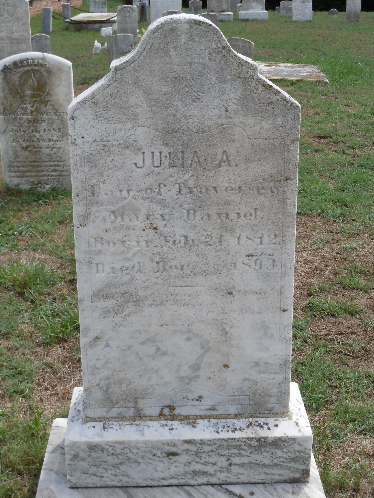

Julia Ann Daniel
1812–1893
Life Events
Born: February 21, 1812
Family
Father: Travers Daniel
Mother: Mary L. Wallace
Siblings
- James Travers Daniel
- Elizabeth Daniel
- Eleanor Ellen Daniel
- Biddie "Biddy" Daniel
- David W. Daniel
- Margaret Daniel
- William Daniel
Spouse:
Military Service
No military service information has been added.
Biography
Julia Ann Daniel was born on February 21, 1812, according to the inscription on her gravestone at Saint Johns Cemetery on Deal Island, Somerset County, Maryland.
Her gravestone identifies her as the daughter of Travers and Mary Daniel. This provides direct historical evidence of her parentage and supports her identification as a daughter of Travers Daniel and Mary L. Wallace.
Julia was one of ten children attributed to Travers Daniel and Mary Wallace in the compiled Daniel family genealogy. The family was associated with Deal Island in Somerset County, Maryland.
Julia died in December 1893, according to her gravestone. The exact day of death remains uncertain because the inscription is difficult to read. She was buried at Saint Johns Cemetery, Deal Island, Somerset County, Maryland.
Photos
No additional photographs have been added.
Grave & Burial

Sources
No sources have been added yet.